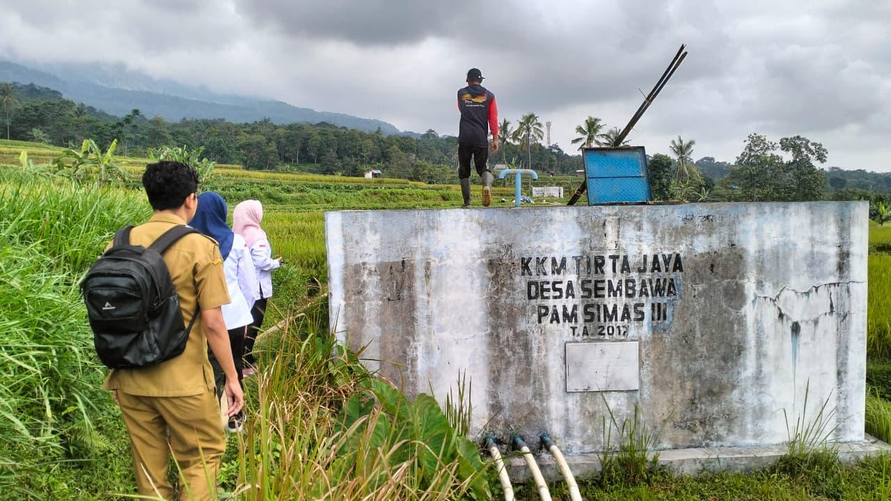
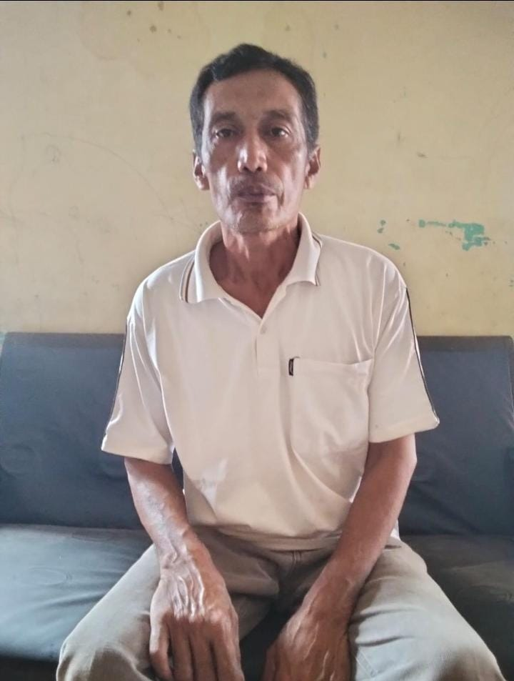
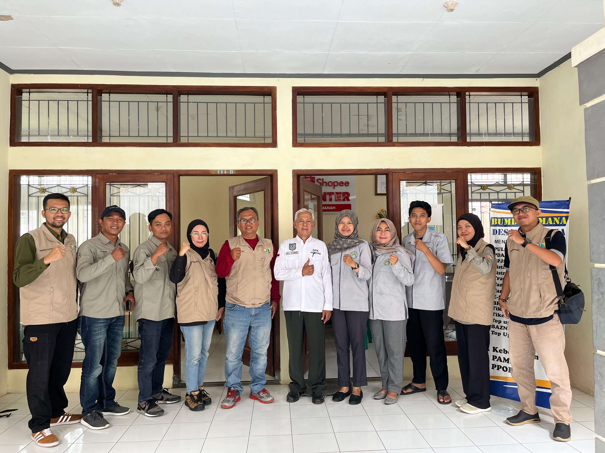
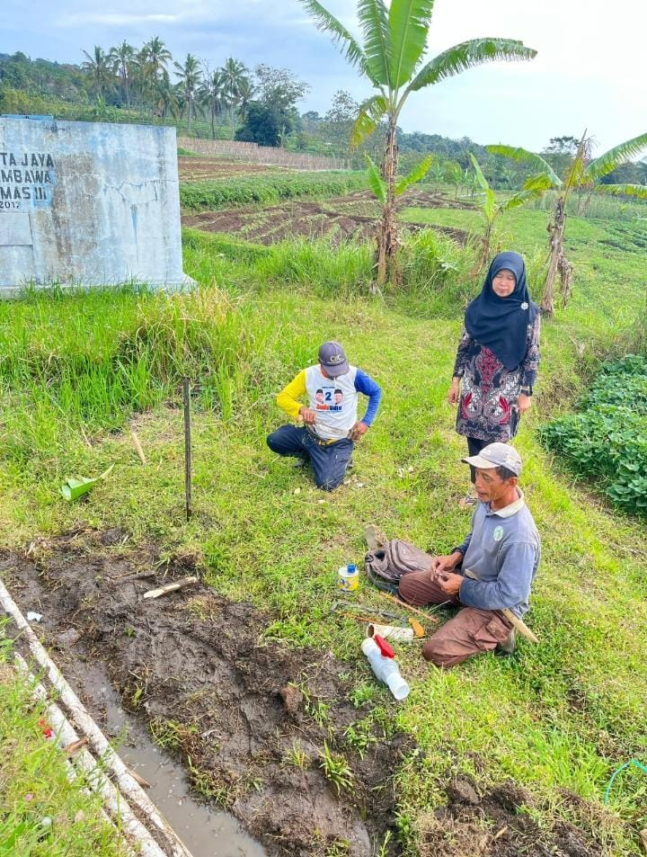
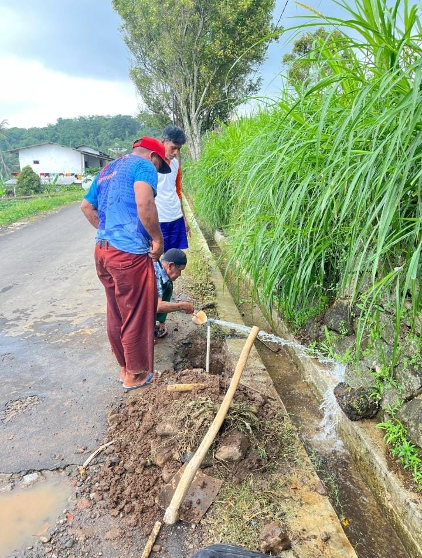
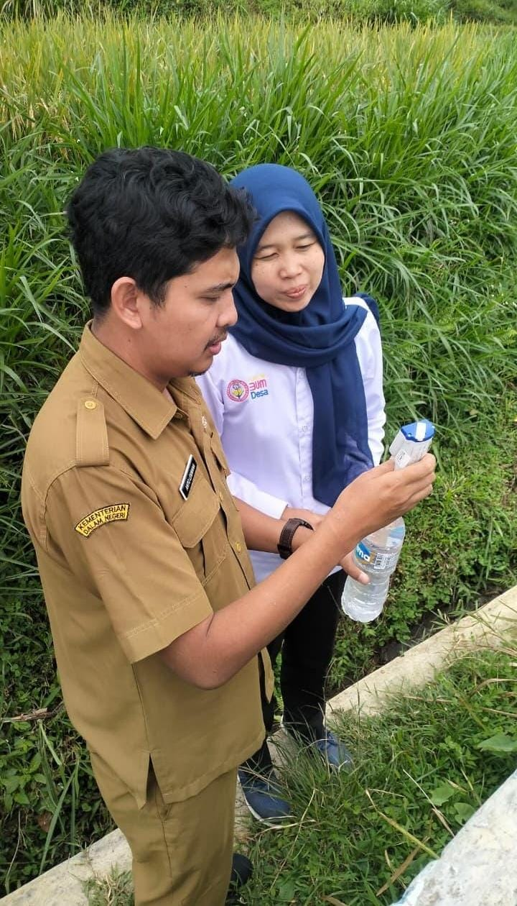

PAM Desa
Unit Usaha PAM Desa BUM Desa Amanah Sembawa dibentuk untuk memperbaiki pengelolaan air bersih swadaya masyarakat yang sebelumnya tidak tertata. Resmi dikelola oleh BUM Desa pada Juli 2020, kelembagaannya semakin kuat setelah Pemerintah Desa menghibahkan aset PAM Desa pada Mei 2021. Saat ini, pengelolaannya menjadi jauh lebih profesional, transparan, dan terencana, sehingga tidak hanya menjamin kualitas dan jangkauan air bersih, tetapi juga berkontribusi langsung pada Pendapatan Asli Desa (PADes) dan kesejahteraan masyarakat.
Detail Layanan:
- Pemasangan sambungan instalasi baru untuk rumah warga seharga RP.1.100.000.
- Tarif jujur dan transparan sesuai dengan pemakaian bulanan seharga
RP.1000/m³ untuk rumah tangga
RP.3000/m³untuk pengusaha
Gratis untuk Fasilitas umum
Biaya Administrasi sebesar RP.2000/Bulan
Denda keterlambatan RP.5000 setelah tanggal 20 setiap bulannya
Tim Pengelola

Apud
Kepala Unit PAM Desa

Sawa Sungkawa
Teknisi
Dokumentasi Usaha

pemasangan saluran pipa dari reservoir
pemasangan pipa untuk ke rumah warga
Pengecekan kualitas air oleh pihak Puskesmas